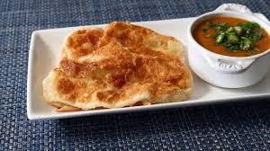

Roti Canai, or Parathas, or Indian Flat Bread is an Indian-influenced flatbread dish found in several countries in Southeast Asia. It is usually served with dal or other types of curry, but can also be cooked in a range of sweet or savoury variations made with a variety of ingredients such as meat, egg, or cheese.